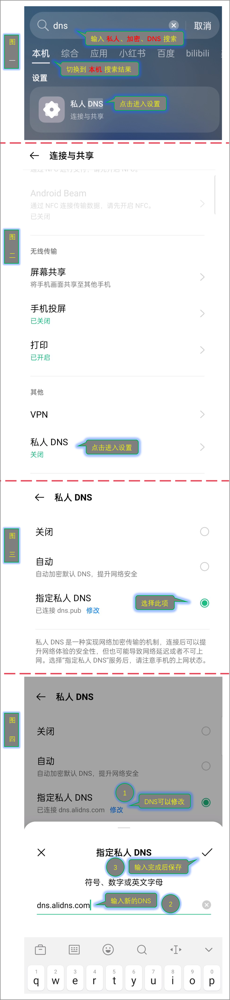
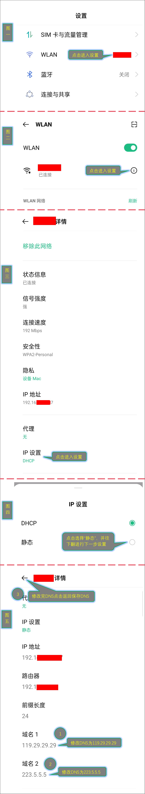
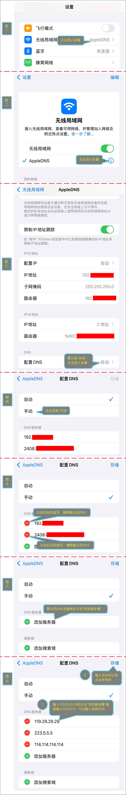
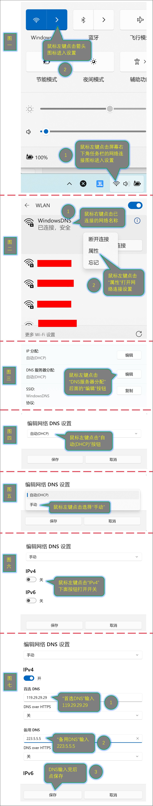

当您遇到网页加载缓慢或无法打开特定网站时，修改 DNS 服务器可能会有效解决问题。以下是详细的操作步骤：
安卓手机分安卓系统版本9及以上和安卓系统版本9以下的修改DNS方法
1.1安卓手机系统版本9及以上，因手机厂商较多，操作方法略有不同，本文不一一例举，本文以OPPO手机为例，在手机主界面下滑弹出搜索界面➠输入“DNS”或“私人”或“加密”，切换搜索选项为本机，看是否有“私人DNS”或者“加密DNS”选项，如果没有可点击手机[“设置”➠“连接与共享”或者(“移动网络”➠“更多连接设置”)]➠点击进入“私人DNS”，这时会看到“私人DNS”下方显示“关闭”的字样➠点击“私人DNS”➠选择“指定私人DNS”，输入 dns.alidns.com ，再点击保存或者是勾号按钮保存DNS，当"指定私人DNS"下方显示“已连接dns.alidns.com”时表示该DNS可用并且已经生效，如显示“无法连接dns.alidns.com”可以修改成其他DNS，可用的DNS有：dns.alidns.com dot.pub dns.pub dot.360.cn dot-pure.onedns.net dns.umbrella.com 1dot1dot1dot1.cloudflare-dns.com dns.opendns.com ，这些DNS是阿里、腾讯、360、微步、思科、CF等品牌的公共DNS，可用性和安全性保障高。

1.2安卓手机系统版本9以下，因系统版本较低，无法使用上一种方法，只能在连接WIFI时使用，在使用手机移动网络时无效，打开手机“设置”➠点击“WLAN”➠点击已连接的WIFI名称进入设置➠往下翻找到“IP设置”，默认显示“DHCP”,点击“IP设置”➠选择“静态”，然后继续往下翻➠找到“域名1”和“域名2”或者是“DNS 1”和“DNS 2”，修改域名1和域名2为 119.29.29.29 和 223.5.5.5 ，然后点击返回保存DNS，这里的DNS是IP形式的，以4段数字中间用三个点隔开，上一种方法不能输入IP，只能输入域名，可用的DNS IP有 223.5.5.5 223.6.6.6 119.29.29.29 119.28.28.28 182.254.116.116 122.112.208.1 114.115.192.11 116.205.5.1 139.9.23.90 180.76.76.76 114.114.114.114 114.114.115.115 8.8.8.8 8.8.4.4 208.67.222.222 1.0.0.1

因苹果手机或网络运营商默认不允许用户修改DNS over TLS，只能在连接WIFI后修改DNS，在使用手机移动网络时无效，打开手机“设置”➠点击“无线局域网”➠点击已连接的WIFI名称进入设置➠往下翻找到DNS项里面的“配置DNS”，默认是“自动”➠点击“配置DNS”➠选择“手动”，点击红色图标的减号将默认的DNS都删掉，有几个就删掉几个，再点击“添加服务器”，输入 119.29.29.29 ，然后继续点击“添加服务器”，输入 223.5.5.5 ，至少输入两组，也可以输入更多组DNS，可用的DNS IP有 223.5.5.5 223.6.6.6 119.29.29.29 119.28.28.28 182.254.116.116 122.112.208.1 114.115.192.11 116.205.5.1 139.9.23.90 180.76.76.76 114.114.114.114 114.114.115.115 8.8.8.8 8.8.4.4 208.67.222.222 1.0.0.1

本文以windows11为例，鼠标左键点击屏幕右下角任务栏的网络连接图标进入设置➠鼠标左键点击网络连接图标旁边的箭头图标进入设置➠鼠标右键点击已连接的网络名称，在弹出的右键菜单里面鼠标左键点击“属性”打开网络连接设置，此时会打开系统设置页面➠鼠标左键点击“DNS服务器分配”后面的“编辑”按钮，会弹出“编辑网络DNS设置”窗口➠鼠标左键点击“自动(DHCP)”按钮，会出现“自动(DHCP)”和“手动”两个选项➠鼠标左键点击选择“手动”➠鼠标左键点击“IPv4”下面按钮打开开关➠在“首选DNS”里输入119.29.29.29，“备用DNS”输入223.5.5.5，最后点击“保存”，可用的DNS IP有 223.5.5.5 223.6.6.6 119.29.29.29 119.28.28.28 182.254.116.116 122.112.208.1 114.115.192.11 116.205.5.1 139.9.23.90 180.76.76.76 114.114.114.114 114.114.115.115 8.8.8.8 8.8.4.4 208.67.222.222 1.0.0.1

4.1谷歌浏览器电脑版，电脑打开谷歌浏览器，左键点击屏幕右上角地址栏右侧的三个小点➠选择进入“设置”➠在屏幕左侧导航栏找到“隐私与安全”并进入➠在屏幕中间从上往下找到“安全”并进入➠屏幕往下翻，找到“使用安全DNS”，确保后面的开关状态为打开，一般默认是打开的➠在“使用安全DNS”下方有“选择DNS提供商”，默认设置为“操作系统默认设置（若有）”➠点击“操作系统默认设置（若有）”，选择“添加自定义DNS服务提供商”，在下方输入 https://dns.alidns.com/dns-query ➠关闭浏览器标签，关闭整个浏览器再重新打开即可生效，可用的DNS有 https://dns.alidns.com/dns-query https://223.5.5.5/dns-query https://223.6.6.6/dns-query https://doh.pub/dns-query https://dns.pub/dns-query https://1.12.12.12/dns-query https://doh.360.cn/dns-query https://doh.opendns.com/dns-query 如想恢复设置，在“选择DNS提供商”右侧选择“操作系统默认设置（若有）”即可
4.2谷歌浏览器手机版，手机打开谷歌浏览器，点击屏幕右上角的三个小点➠选择进入“设置”➠找到“隐私与安全”并进入➠找到“使用安全DNS”，默认是“关闭”状态➠点击“使用安全DNS”➠将"使用安全DNS"右侧的开关打开➠点击选择“另选一个提供商”➠“另选一个提供商”下方选择“自定义”并在“提供商网址”处输入 https://dns.alidns.com/dns-query ➠点击左上角的返回保存设置，彻底关闭手机浏览器再重新打开即可生效，可用的DNS有 https://dns.alidns.com/dns-query https://223.5.5.5/dns-query https://223.6.6.6/dns-query https://doh.pub/dns-query https://dns.pub/dns-query https://1.12.12.12/dns-query https://doh.360.cn/dns-query https://doh.opendns.com/dns-query 如想恢复设置，将"使用安全DNS"右侧的开关关闭即可
方法4仅限于浏览器使用，不区分电脑或手机，APP使用此方法无效，浏览器不限于谷歌浏览器，比如EDGE、火狐等在设置中有类似“安全DNS”选项设置的浏览器均可使用此方法，操作基本相似，如浏览器无类似“安全DNS”选项设置则此方法不适用，上述方法设置完成后为了使设置生效，都需要关闭浏览器或APP再重新打开，如浏览器设置后未生效可尝试清除缓存和cookie后再试
| 服务商 | 首选DNS | 备用DNS |
|---|---|---|
| 阿里 DNS | 223.5.5.5 | 223.6.6.6 |
| 腾讯 DNS | 119.29.29.29 | 119.28.28.28 |
| Google DNS | 8.8.8.8 | 8.8.4.4 |